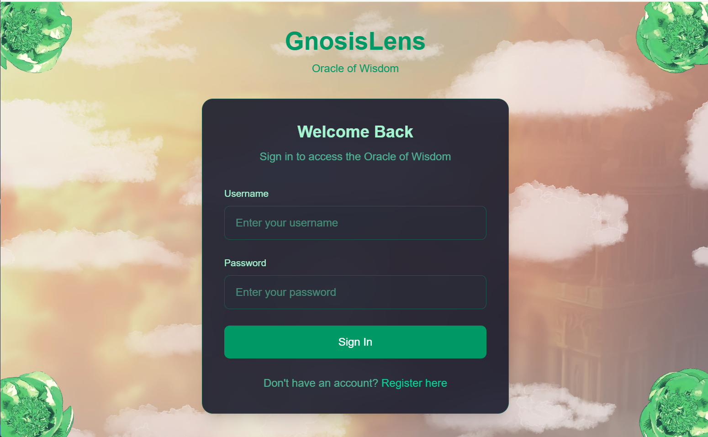

Gnosis Lens
Gnosis Lens is an AI-powered analytical tool designed to enhance cognitive decision-making through data visualization and predictive modeling. Built with a focus on user-friendly interfaces and intelligent feedback systems, the project integrates machine learning and responsive web design.
Visit the live project here: 🔗 Gnosis Lens (Live Demo)
